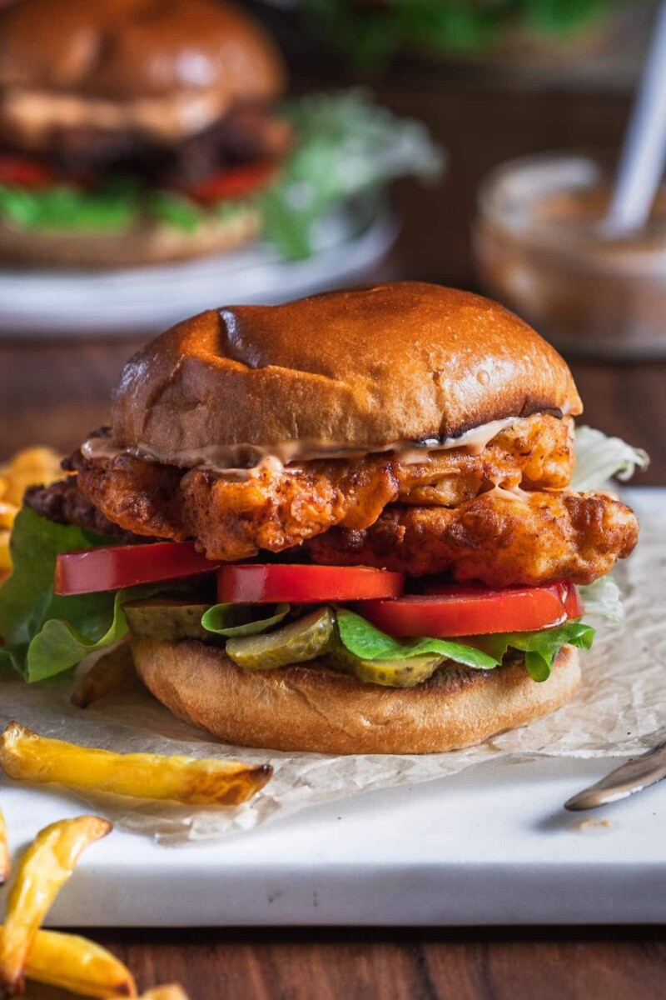
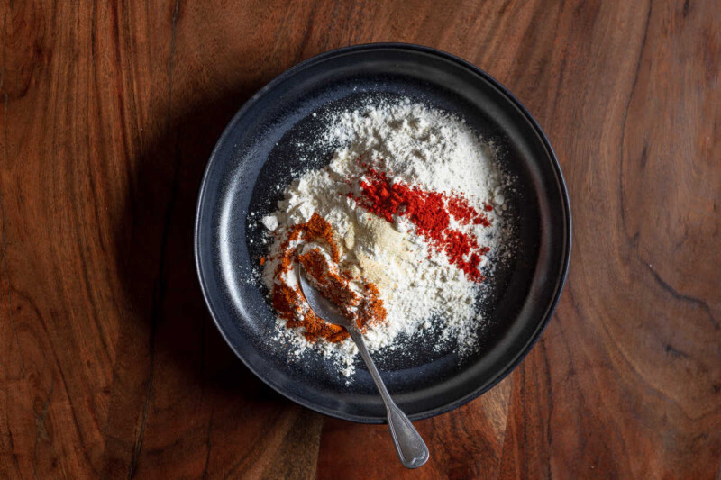
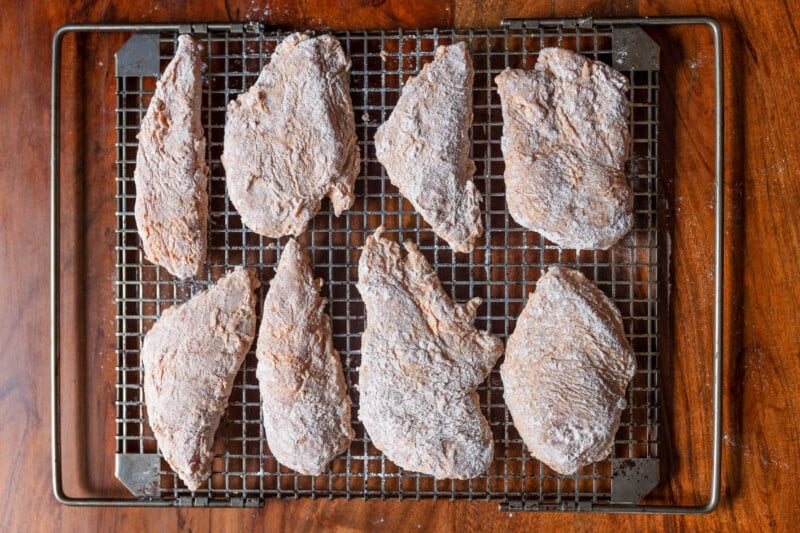
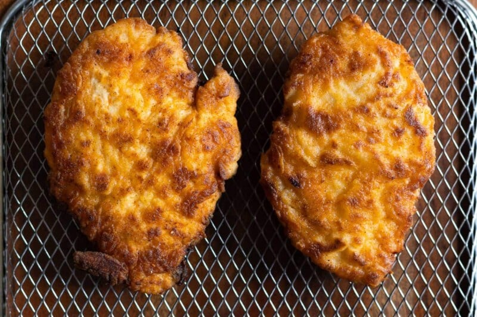

Spicy Chicken Sandwich Recipe

Description:
This spicy chicken sandwich is quick and easy to make and has the most delicious crispy breading! It's better than McDonald's or Popeye's and comes together in minutes.
Ingredients:
- Chicken breasts
- Flour
- Buttermilk
- Sriracha
- Eggs
- Spices
- Sandwich fix-ins
- Oil
Steps:
Making a spicy chicken sandwich
- Prepare the batter and dry the mix.In one bowl, whisk together the flour, salt, chili powder, and pepper. In another bowl, add buttermilk and sriracha to the whisked eggs and mix until fully combined.

- Season the chicken.Dip the chicken fillets in the dry mix first, then in the buttermilk mixture, then once again in the dry mix. Do this with all the chicken fillets.

- Fry the chicken.Heat oil in a deep frying pan. Add the chicken fillets and cook for 4-5 minutes until the chicken is golden brown on both sides.
- Remove excess oil.Once cooked, remove the chicken fillets from the oil and put them on a wire rack.

- Assemble the sandwiches. Assemble the spicy chicken sandwiches by adding them to the potato rolls along with the fillings and sauces of your choice.
Back